<section id="partners" class="py-12 bg-black">
    <div class="container mx-auto overflow-hidden">
      <h2 class="text-center text-3xl font-bold text-white mb-8">Our Partners</h2>
      <div class="logos">
        <!-- Duplicate slides untuk infinite effect -->
        <div class="logos-slide">
          
          
          
          
          
          
          
          
          
          
        </div>
        <div class="logos-slide" aria-hidden="true">
          
          
          
          
          
          
          
          
          
          
        </div>
      </div>
    </div>
  </section>
  
  <style>
  /* Styling untuk infinite scroll */
  .logos {
    --gap: 0px;
    display: flex;
    gap: var(--gap);
    overflow: hidden;
    user-select: none;
  }
  
  .logos-slide {
    flex-shrink: 0;
    min-width: 100%;
    display: flex;
    align-items: center;
    justify-content: space-around;
    animation: scroll 20s linear infinite;
  }
  
  .logos:hover .logos-slide {
    animation-play-state: paused;
  }
  
  @keyframes scroll {
    from {
      transform: translateX(0);
    }
    to {
      transform: translateX(calc(-100% - var(--gap)));
    }
  }
  
  /* Styling gambar */
  .logos-slide img {
    height: 70px; /* Sesuaikan tinggi logo */
    width: auto;
    margin: 0 16px;
    filter: grayscale(100%) brightness(200%);
    transition: filter 0.3s ease;
  }
  
  .logos-slide img:hover {
    filter: none;
  }
  
  /* Responsive design */
  @media (max-width: 768px) {
    .logos-slide {
      animation-duration: 25s;
    }
    .logos-slide img {
      height: 30px;
    }
  }
  </style>